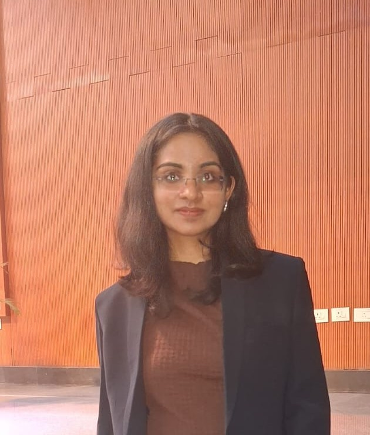

IIT Dharwad · Batch of 2026
Mathematics & Computing undergraduate building at the intersection of machine learning and software systems — from published research in optimization to production-grade ML classifiers.

Profile
Final-year undergraduate at IIT Dharwad, specialising in Mathematics & Computing, with a strong interest in AI/ML and software systems — particularly problems where the two naturally converge.
I have contributed to published research in online convex optimization, built Martian terrain classifiers achieving 92% test accuracy, and consulted on quantitative research at WorldQuant Brain. I bring a combination of theoretical rigour and hands-on engineering.
I am an effective collaborator with demonstrated ownership across internships, research labs, and student leadership — and I thrive in environments that demand both precision and creativity.
Career
May – Jul 2025
Indian Institute of Science (IISc)
May 2024 – Mar 2025
LIaN Lab, IIT Dharwad
"Improved Bounds for Online Convex Optimization"
Sep – Dec 2023
WorldQuant Brain
Work
01 / ML & Computer Vision
CNN-based terrain classification across 8 Martian surface classes, trained on 6,000+ images. Addressed severe class imbalance via upsampling; outperformed a VGG-16 baseline.
Test accuracy
View on GitHub02 / High-Performance Computing
Profiled OpenCL matrix-multiplication kernels vs CUDA on an NVIDIA Quadro RTX 5000. Evaluated execution time, temperature, and energy consumption. Achieved 2.8× speedup using cache-aware tiling.
Speedup at 4k matrix size
03 / Medical AI
Explored BiLAF and ActiveFT sampling for medical image segmentation in low-label settings. Achieved Dice 0.7 with only 10% labels using BiLAF; analysed feature-space coverage via PCA.
Dice score at 10% labels
04 / Full-Stack Web
Full-stack web system replacing manual library record-keeping. RESTful backend APIs for CRUD operations, book issue/return logic, notifications and reminders with persistent MongoDB storage. Server-side permissions ensure data consistency.
View on GitHub05 / Systems Programming
Implemented a Unix-like shell from scratch with job control, signal handling, I/O redirection, pipelines, and foreground/background execution using low-level system calls (fork, exec, wait).
View on GitHub06 / Networking
Two-player checkers over TCP socket programming with a Gradio UI. Includes DNS-based ad blocking (dnslib) and automated post-game email summaries via smtplib.
View on GitHubExpertise
Languages
ML & Data
ML Concepts
Web & Backend
Databases
Tools
Academic
Indian Institute of Technology Dharwad
December 2022 – May 2026
Recognition
Speaker at IEEE ICASSP 2025
Delivered a lecture on published research at a top-tier peer-reviewed conference · Hyderabad, India
Literary Club Secretary, IIT Dharwad
Led a team of 10+ students in organising and managing literary events on campus
Research Consultant, WorldQuant Brain
700+ simulations · 15+ alpha signals produced across quantitative trading strategies
Connect
Whether it's a research role, full-time position, or an interesting problem — I'd be glad to hear from you.